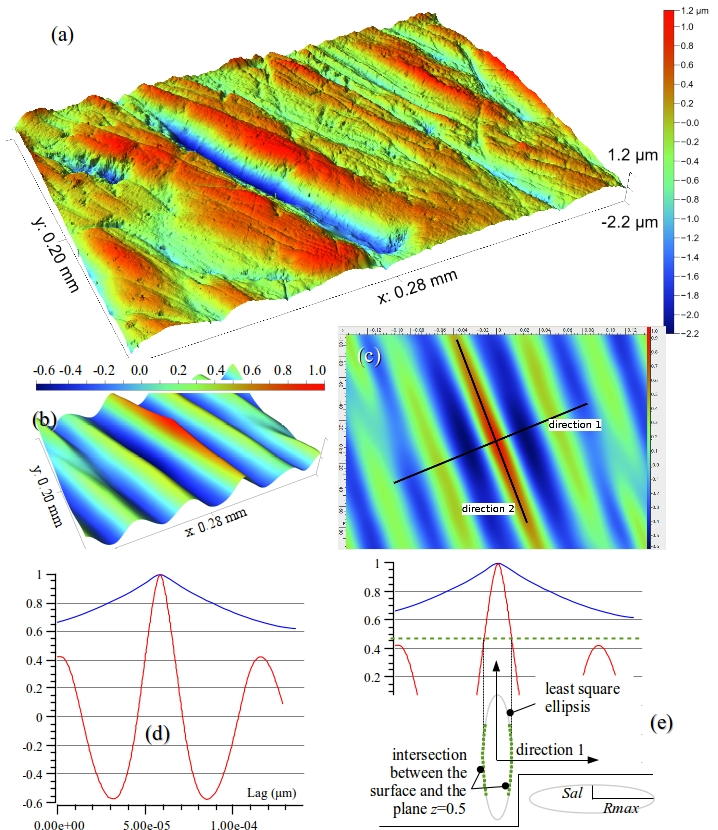
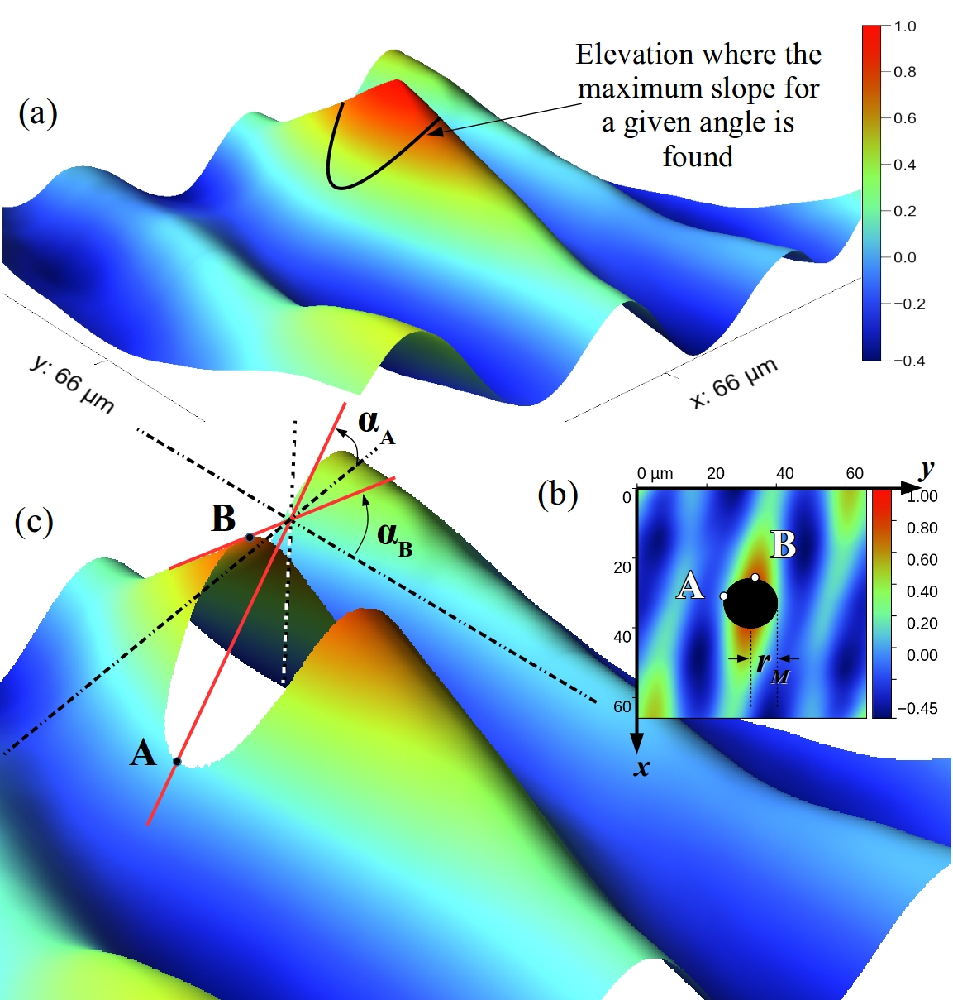

The autocorrelation function searches for correspondences of a surface with itself.
If the surface heights are white noise, the only shift that matches the original surface is : and elsewhere.
Conversely if the surface exhibits “macro” features, like peaks, valleys, scratches, etc. then decreases more slowly from its
maximum value 1 (reached in , ).
If the surface is isotropic (no preferred direction) is axisymmetric, otherwise has a higher decreasing rate across the pattern direction.
Therefore decreasing behavior is a means to catch the direction of anisotropy when it occurs, and especially it quantifies the amount of anisotropy, as explained on
figure the figure below.
Autocorrelation function ellipsis
The aforementioned method needs a height \(z\) for the cutting plane. The *ISO 25178* norm suggests \(z=0.2\), however it is
not suitable (it is too low) for numerous anisotropic surfaces. We propose to average the values of \(Sal\) and \(Rmax\) for
\(z=0.3\), \(0.4\) and \(0.5\).

- (a) A typical surface to be analyzed.
- (b) The normalized 2D autocorrelation function.
- (c) Two profiles are extracted along directions #1 and #2; #1 across the scratches and #2 along the scratches.
- (d) The profile #1 (red curve) is more self repeating than the profile #2 because of shorter wavelengths.
- (e) A plane that cuts the 2D \(f_{ACF}\) surface at height \(z\), defines an ellipsis—or just a part of it—with the small axis in direction #1 and the big axis in direction #2. The anisotropy can be quantified by \(Rmax/Sal\), and the groove length by Rmax.
(\(Rmax\): semi-major axis, \(Sal\): semi-minor axis)
A complementary way of catching the decreasing behavior of \(f_{ACF}\) is to directly study its slope around
\((0,0)\), as explained below.
Autocorrelation function slopes

- (a) In each direction, the point of maximum slope is recorded.
- (b) At the minimum radius of the curve, the slopes are determined. The highest is located in \(A\) and the lowest in point \(B\).
- (c) Three parameters are built: \(b.sl=\alpha_A\) , \(s.sl=\alpha_B\) and \(r.sl = b.sl/s.sl\).
Nodes of different colours represent the following:
Solid arrows point from a submodule to the (sub)module which it is
descended from. Dashed arrows point from a module or program unit to
modules which it uses.
Where possible, edges connecting nodes are
given different colours to make them easier to distinguish in
large graphs.
Nodes of different colours represent the following:
Solid arrows point from a submodule to the (sub)module which it is
descended from. Dashed arrows point from a module or program unit to
modules which it uses.
Where possible, edges connecting nodes are
given different colours to make them easier to distinguish in
large graphs.
Variables
Type
Visibility
Attributes
Name
Initial
character(len=6),
public
::
APO_FFT_ANI
dimension multiplier for 0-padding
real(kind=R8),
public
::
PAD_FFT_ANI
dimension multiplier for 0-padding
Subroutines
public subroutine acv(tab_in, tab_out, long, larg)
public subroutine correlation_parameters(tab, long, larg, res, cut, sub_plane, scale_xy, omp)
Function that returns ellipse_acf parameters calculated on the autocorrelation
function. But prior to the acf calculation, the mean plane is subtracted.